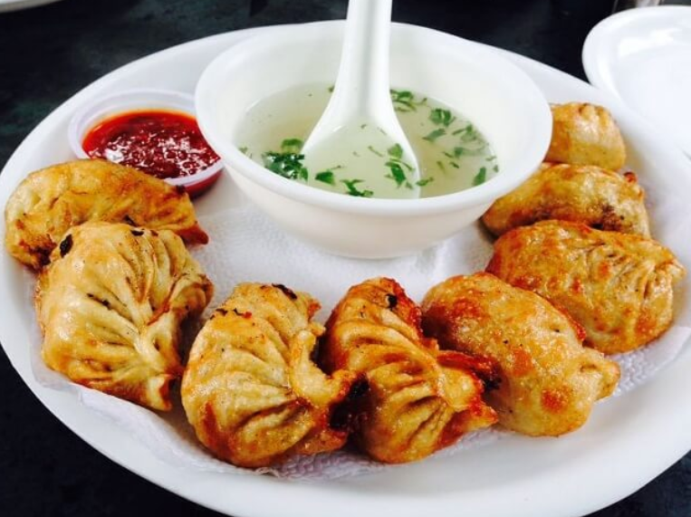
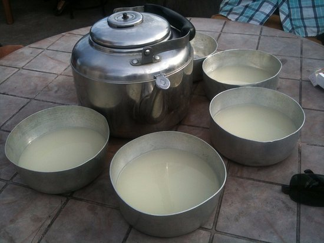
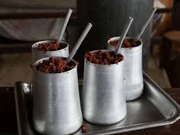

fried momo （フライドチ もも）は、ネパールのスパイス味が入れています。 このジューシーな蒸しモモは、地下水牛の肉から調製され、 「バフモモ」と呼ばれます。ラッパーは非常に薄く巻かれており、 フィリングはおいしくスパイシーでジューシーで、ピリッとした黄色のチャツネと蒸した モモの味を補完する古典的なスパイシーなトマトソースが添えられています。
chang （チャン）は、発酵大麦に温水を通すことで作られ、大きな鍋に入れて 木製のストローで飲む。チャンやトンバとは異なり、 ジャンドは大きなマグカップで提供されます。これらのアルコール飲料は、 マーチャと呼ばれる伝統的なスターターを使用して生成されます。

soup momo（スープモモ）は、蒸したモモを肉や野菜のスープに浸した料理です 。パン焼きももは、コテ モモ としても知られています。 ホットソースで蒸したモモは シ モモと呼ばれます。
